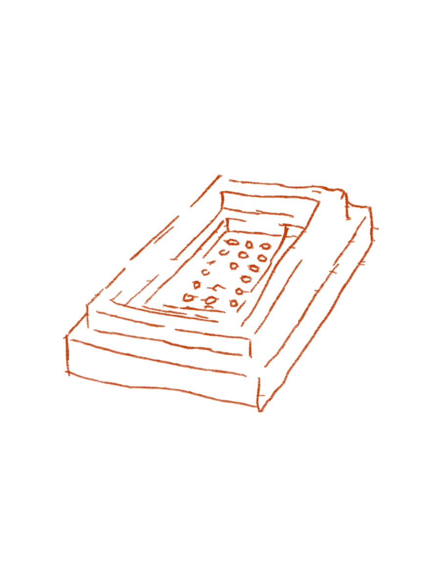
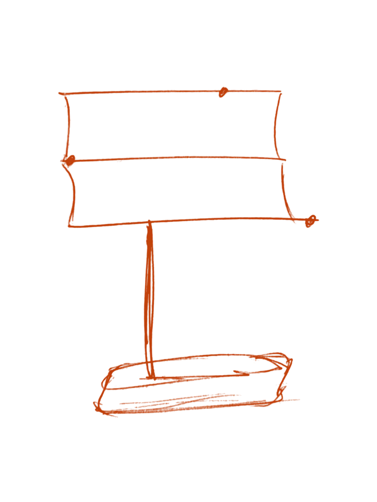
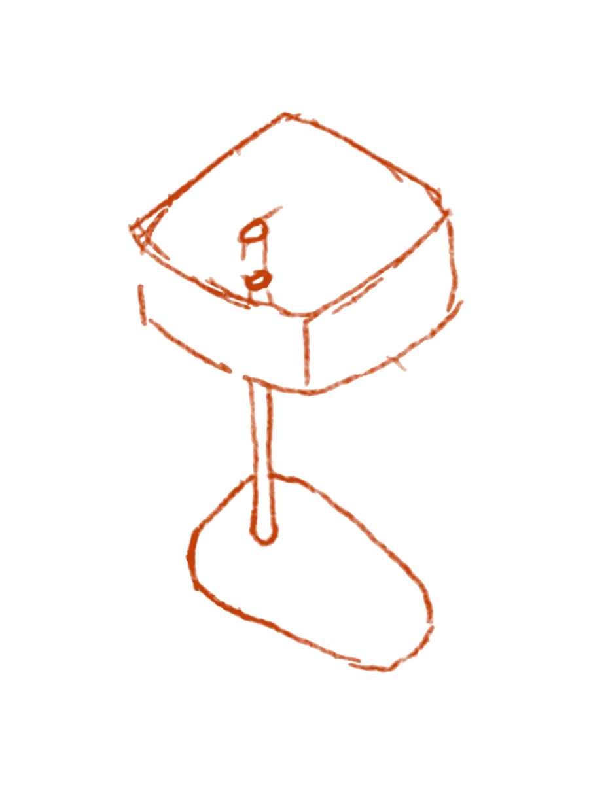
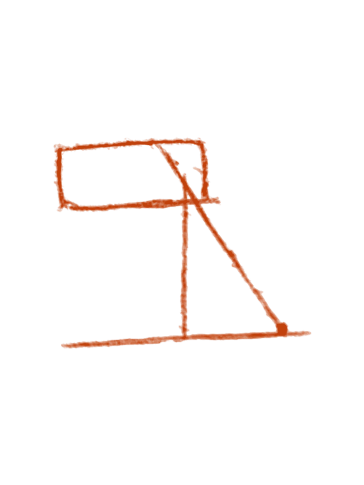
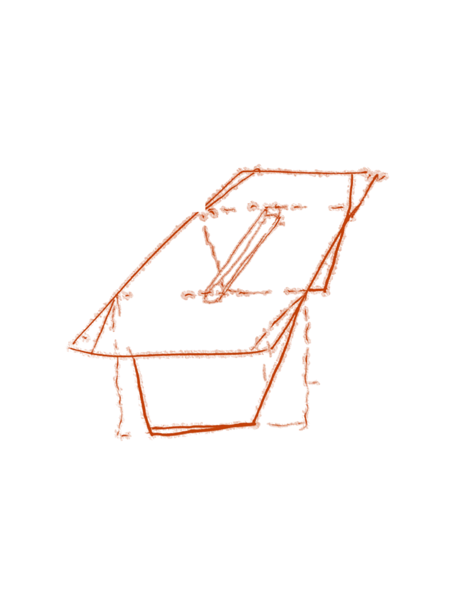
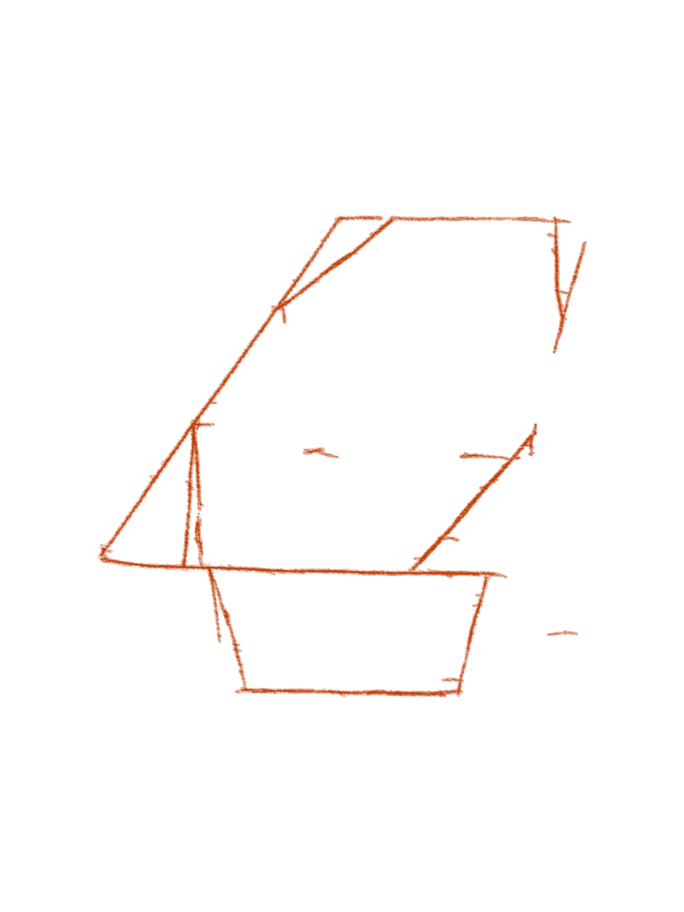
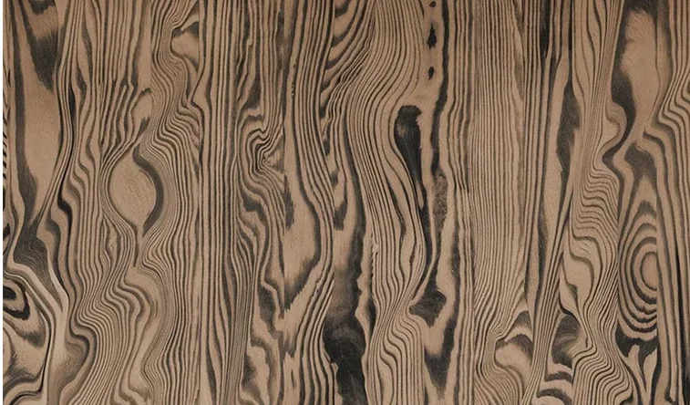
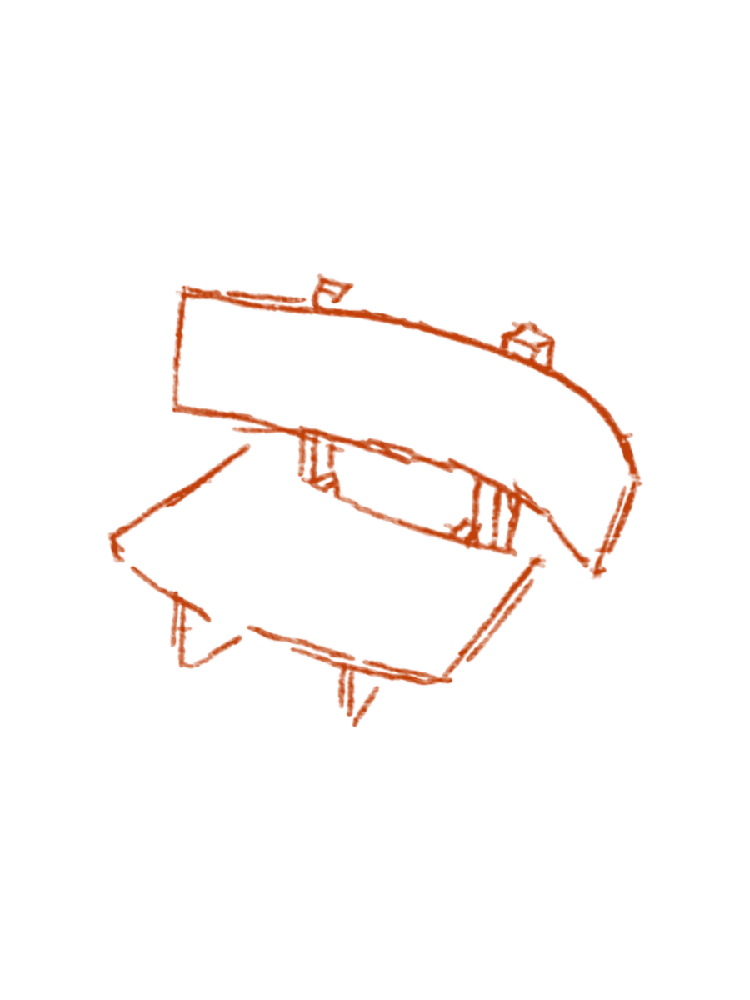
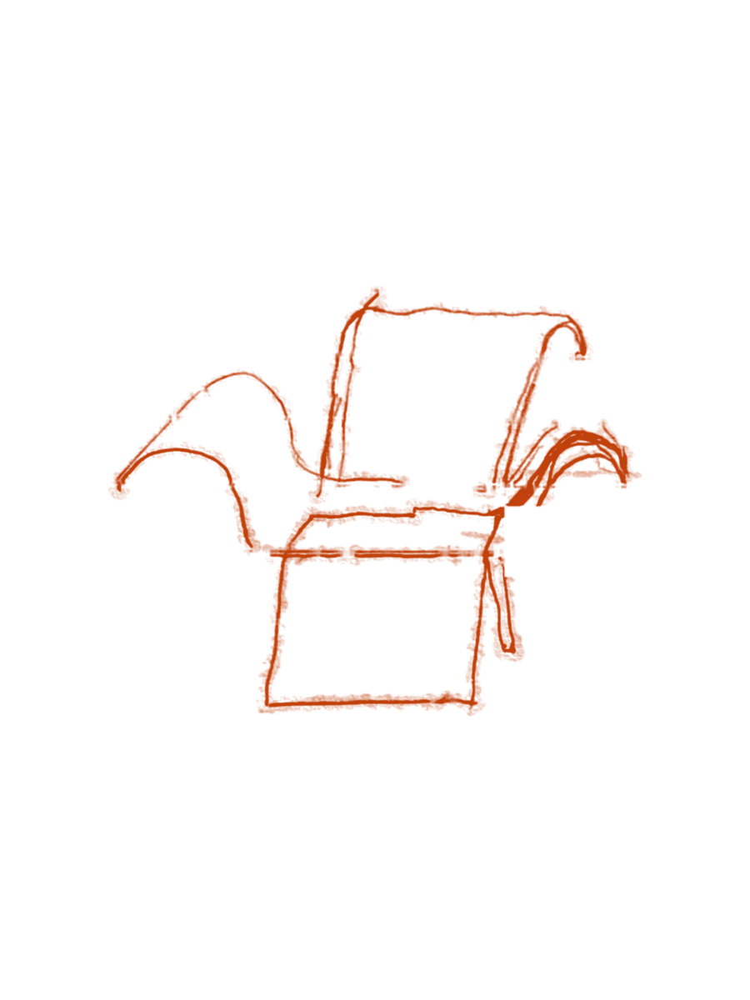
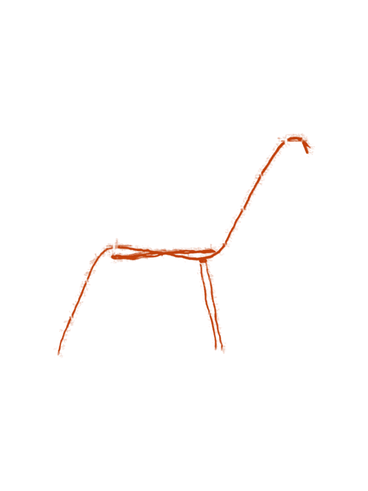

Béton coulé

croquis · vide-poche
Cendrier. Béton teinté dans la masse.
Studio de design d'objet
Des objets qui rock.
Un minimalisme chaleureux. Le calme du Japandi, réchauffé par le soleil des années 70 : assez sobre pour servir chaque jour, assez singulier pour qu'on le remarque.
On ne voit jamais la source, seulement la lumière. Elle chauffe le bois, glisse sur l'alu, traverse l'orange.
La beauté vient du matériau lui-même : tranche du contreplaqué, patine du cuir, grain du béton.
Partir d'une contrainte plutôt que d'une page blanche. Détourner un objet sans trahir sa forme.
D'un côté l'organique et le vivant, de l'autre la dureté et la modernité. Les objets Alva naissent de leur rencontre.
Chêne, frêne, bois huilé.
Léger, chaud au toucher.
Strates visibles sur la tranche.
Brossé, il capte la lumière.
Imprimé en 3D, couche par couche.
Ambré, diffus, jamais banal.
Émaillée, en tesselles pour la mosaïque.
Tanné végétal, qui se patine.
Textures naturelles, douces.
Coulé en moule silicone.
Des objets qu'on garde. Ce qui guide chaque choix de forme, de matière et de fabrication.
Chaque pièce est fabriquée en France, artisanalement et à la main.
Des pièces vissées plutôt que collées, des composants standards. Un objet Alva se répare, se modifie, se transmet.
Des prises en main faciles, aucune arête vive. Un objet bien pensé sert aussi les mains fragiles, âgées ou appareillées.

par Alva · pièce unique
Deux icônes du design industriel, détournées en une seule lampe. Le pied en aluminium d'un iMac. Le corps d'un Mac mini.
Dedans, l'ampoule est cachée par une demi-sphère orange. La lumière la traverse, redescend et remonte sur l'alu brossé.
Les prochaines pièces, déjà sur le carnet, bientôt chez vous.

croquis · vide-poche
Cendrier. Béton teinté dans la masse.



croquis · abat-jour en bandes 1 / 3
Une nouvelle lumière. Autour de ce que le verre doit raconter.



croquis · plateau rainuré 1 / 2
Fines couches cintrées et collées sur gabarit, strates visibles sur la tranche.



croquis · banc 1 / 3
L'assise, quand le bois n'aura plus de secret.
Une géométrie rigoureuse, une palette réduite.
De l'esquisse à la pièce. On teste tôt, on corrige souvent, et on ne lance rien qui n'ait été tenu en main.
Un objet à détourner, une matière, un usage. Ou un croquis à la volée au détour d'un café.
Dessin et modélisation pour caler les volumes et les cotes.
Impression 3D, carton, mousse : une forme à tenir en main.
On essaie, on corrige, on recommence, avec les vraies matières.
Finitions, photos, puis une petite série fabriquée près d'ici.
Ceux qui ont ouvert la voie : le calme japonais, la chaleur scandinave, la poésie européenne et le soleil des années 70.
Une pièce vous parle ?
Commande, collaboration, presse, ou simple curiosité : le studio répond à chaque message.